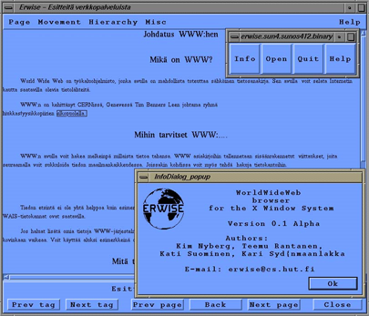
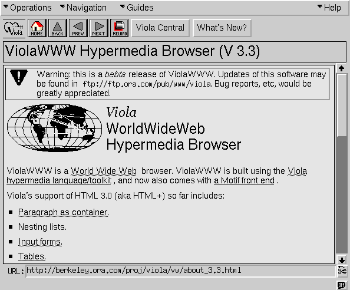
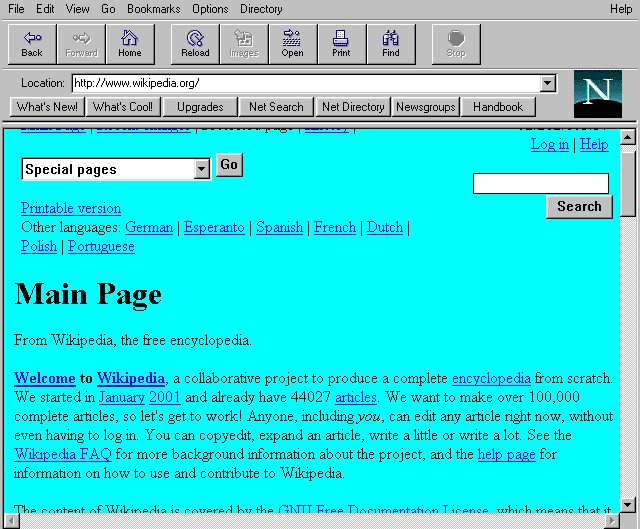
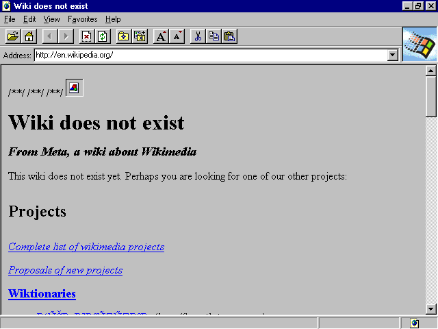
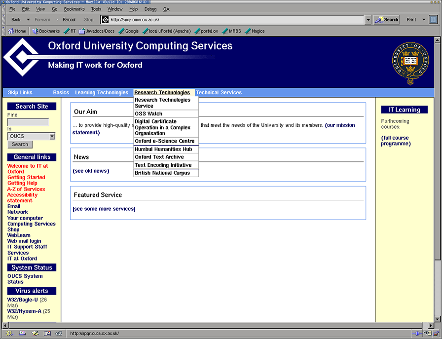
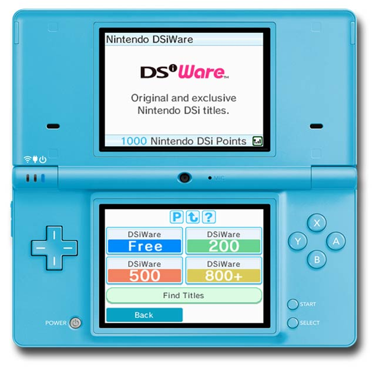
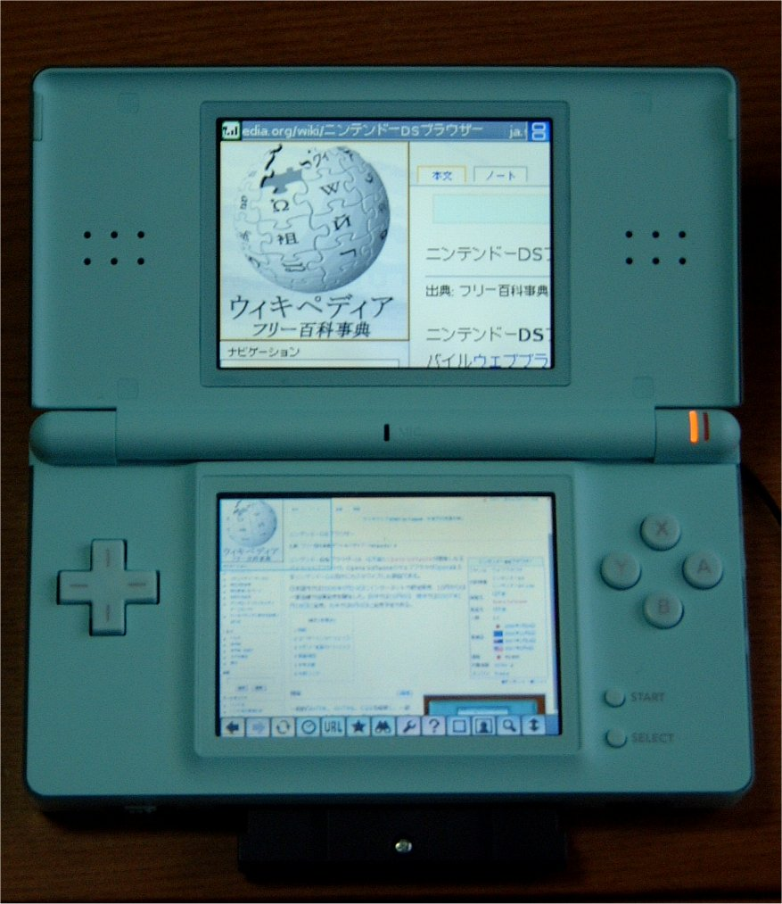
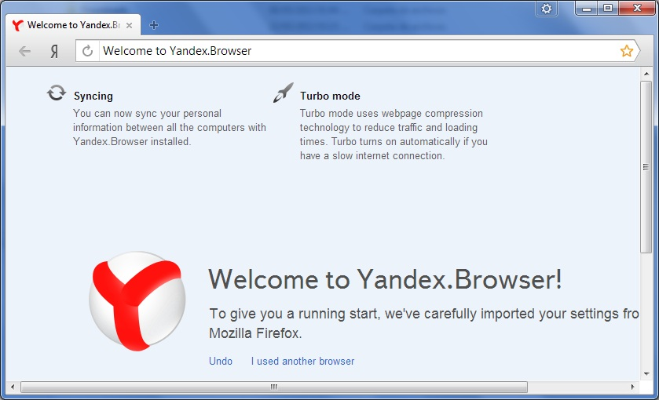

1990, CERN, Швейцария
Тим Бернерс-Ли выложил в сеть первый браузер WorldWideWeb, сервер,
а также сайт, где он описал использование HTML 1.0

Краткая история браузеров
| 1991 | Тим доработал WorldWideWeb и выложил его исходный код в сеть (позже был переименован в Nexus, что бы не путать браузер со всемирной сетью). |
| 1992 | Появляются новые браузеры MidasWWW, Erwise и ViolaWWW. Начинается работа над NCSA Mosaic (или просто Mosaic). Выходит Lynx — текстовой браузер, который до сих работает, развивается и обновляется. |



| 1993 | Выходит браузер Mosaic. |

| 1994 | Выходит Web Explorer от IBM. Тим Бернерс-Ли создаёт World Wide Web Consortium (W3C). Начиначется работа над браузером Opera. Выходит браузер Netscape Navigator. |


| 1995 | Выходит Microsoft Internet Explorer. |

| 1996 | Выходит браузер Opera под Microsoft Windows. Netscape Navigator на пике своей популярности. Выходит Internet Explorer под Mac OS X. |
| 1997 | Прекращается разработка и поддержка Mosaic. Начало разработки браузерного движка Gecko. IE 4 выходит на новом движке Trident. |
| 1998 | Начинается работа над браузером Opera под мобильные устройства. Зарождается браузерный движок WebKit (KDE's HTML layout engine (KHTML), KDE's JavaScript engine (KJS)). Создан проект Mozilla. |
| 1999 | Начало бума доткомов. Инвесторы вкладывают огромные деньги в онлайн стартапы. |
| 2000 | Выходит кросплатформенный браузер Opera 4.0. Opera Mobile 3.6 впервые начинает использоваться на телефонах. IE навсегда покидает Mac. |
| 2001 | Начата работа над WebKit отдельно от KHTML и KJS. Окончание бума доткомов, большинство стартапов растратили вложенные инвестиции, так и не окупившись. |
| 2002 | Анонсирован JavaScriptCore (компонет WebKit). Зарождение эры Web 2.0. Вышла первая версия браузера Mozilla на базе Gecko. Началась работа над браузером известным сегодня как Firefox (сначала он назывался Phoenix, потом Firebird, позже Mozilla Firefox). |
| 2003 | Apple Safari и WebCore (компонент WebKit) был представлен Стивом Джобсом на конференции Macworld Expo. Opera Mobile 6.0 начинает поддерживать Windows Mobile. |
| 2004 | Начинается работа над Opera Mini. Выходит первая версия Mozilla Firefox на базе Gecko. |

| 2005 | WebKit становится общедоступным (open-source), добавлена поддержка векторной графики в формате (SVG). |
| 2006 | Выходит Opera для Nintendo DS и Nintendo Wii (браузер назывался Internet Channel). Opera Mobile начинает поддерживать SVG. |


| 2007 | Стив Джобс показал миру первый iPhone, который поставлялся с Mobile Safari. Позже в этом же году выходит Safari под Windows. После лимитированного распространения в Европе релизится Opera Mini. |
| 2008 | Выходит Google Chrome, а так же open-source браузер Chromium. Оба на основе WebKit. |

| 2010 | Выходит Firefox Mobile. Анонсирован WebKit2. |
| 2012 | Выходит Chrome под Android и iOS. Выходит Яндекс Браузер на основе Chromium. |

| 2013 | Анонсирован браузерный движок Blink на который в этом же году перешли Google Chrome, Chromium, Opera и все остальные браузеры использующие в своей основе Chromium. Выходит мобильная версия Яндекс Браузера под Android и iOS. |